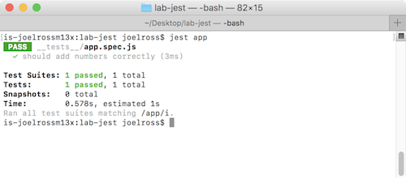

Chapter 22 Test con Jest
Le persone non sono ripetibili come i computer. Ne’ dovremmo aspettarcelo. Uno script di shell o un batch file eseguira’ le stesse istruzioni, nello stesso ordine, volta dopo volta. Puo’ essere messo sotto controllo di versione, cosi’ puoi anche esaminare le modifiche alla procedura nel tempo (“ma prima funzionava…”). - The Pragmatic Programmer
Questo capitolo introduce l’automated testing usando il framework Jest. Seguendo questo tutorial, imparerai come scrivere ed eseguire semplici unit tests su functions JavaScript e codice che manipola il DOM.
Questo tutorial fa riferimento al codice su https://github.com/info343/jest-tutorial.
22.1 Test
Uno degli obiettivi piu’ importanti nello sviluppo di programmi e’ assicurarsi che il codice scritto funzioni davvero. Puoi determinare se un programma funziona considerando tre cose:
Quale input e’ stato dato al programma? Dal punto di vista dell’utente, sono le azioni che l’utente ha fatto (ad es. “ho premuto un button”). Dal punto di vista del codice, e’ spesso il value passato a un method.
Eseguire il programma con un certo input porta a un received result: qualcosa accade a causa dell’input. Dal punto di vista dell’utente, questo corrisponde ai cambiamenti di una web page causati da un button premuto. Dal punto di vista del codice, puo’ essere il value restituito da quella function (o potenzialmente un nuovo value per una state variable).
Per sapere se un programma ha funzionato, devi sapere qual e’ l’expected result: cosa doveva succedere a causa dell’input? Se non sai cosa il programma doveva fare, non hai modo di sapere se ha funzionato oppure no!
Puoi testare un programma fornendo l’input e poi confrontando il received result. Se il received result corrisponde all’expected result, allora sai che il programma ha funzionato! Testing e’ semplicemente il processo di fornire gli input e confrontare i risultati received ed expected.
Fornire l’input e poi confrontare i risultati received ed expected puo’ diventare noioso, soprattutto se hai molti input possibili o richiedono piu’ passaggi (come cliccare su piu’ button). Per questo e’ utile usare automation per far svolgere il testing al computer. Definisci l’expected result di un’azione e il computer verifica se il received result corrisponde.
Dato che l’automated testing e’ cosi’ utile e comune, esiste una grande varieta’ di testing frameworks: script esterni che forniscono il codice per confrontare facilmente received ed expected results.
In JavaScript, i testing frameworks piu’ popolari sono Jasmine, Mocha (che e’ solo il framework, usa Chai per confrontare received ed expected results—le bevande calde sono un tema), e Jest. Quest’ultimo e’ stato sviluppato da Facebook per supportare il testing di applicazioni React, ed e’ il framework introdotto e usato in questo corso (anche se l’API e’ quasi identica a Jasmine e Mocha/Chai).
22.2 Testing con Jest
Jest e’ un programma da command line, quindi devi averlo installato sulla tua macchina. Puoi installarlo globalmente tramite npm:
npm install -g jestInoltre, devi installare le dependencies elencate nel file package.json di questo repository, che permetteranno ai test di usare la sintassi dei moduli ES6 per accedere alle functions in un file separato da testare (e anche le definizioni di auto-complete per Jest!).
# install all dependencies
npm installCon Jest, definisci i “tests”, che sono semplicemente codice JavaScript usato per eseguire l’action e confrontare i risultati received ed expected. Questi test possono essere messi in un file il cui nome finisce con .test.js (indicando che e’ uno script di test), .spec.js (per “specification”), o in un file .js dentro la cartella __tests__ del programma. In ogni caso, uno script di test e’ solo un file JavaScript, quindi puoi includere qualsiasi codice/variable/function desideri.
22.3 Scrivere un test
Definiamo un “test” (un controllo che una funzionalita’ specifica funzioni) chiamando la function test()—una function predefinita fornita da Jest. Questa function prende due argomenti: una string che descrive cosa il test sta controllando, e una callback function che contiene il codice da eseguire per fare l’azione e confrontare i risultati.
test('should do something...', function() {
//qui va il normale codice Javascript che esegue il test
});Le descrizioni dei test (il parametro string) sono scritte al tempo presente e dichiarano in inglese semplice quale behavior DOVREBBE avvenire. Iniziare la descrizione con la parola “should” e’ un buon approccio!
Jest fornisce anche una function
it()che e’ un alias ditest()e permette al codice di leggere come un inglese con poca punteggiatura:it('should do something', function() { ... });
Assertion e matcher
Controlliamo che il programma faccia davvero cio’ che stiamo testando scrivendo un’assertion. Un’assertion e’ una proposition che afferma che un fatto e’ vero. In questo caso, assertiamo che l’expected result e l’actual result siano uguali. Se la proposition risulta valida (la nostra affermazione che i risultati coincidono e’ vera), allora sappiamo che il programma funziona e quindi il test “passa”!
Puoi pensare a un’assertion come a un if-else statement:
if(received value == expected value){ test passes } else { test fails }
In Jest, facciamo un’assertion chiamando la function expect() con un matcher appropriato. La function expect() prende un solo parametro, che e’ il received result (prodotto eseguendo l’azione; ad es. chiamando la function con un input specifico). Un matcher e’ un’altra function chiamata direttamente sul value restituito da expect(), e prende come argomento l’expected result che vogliamo confrontare. Il matcher fa il lavoro di confrontare i values e poi riporta la validita’ della nostra affermazione a Jest:
test('should add numbers correctly', function() {
expect(1+1).toEqual(2);
});In questo caso,
.toEqual()e’ il “matcher” che confronta i values received ed expected per vedere se sono uguali.Fai attenzione alle parentesi! La function
expect()dovrebbe prendere una singola espressione (anche se include una function call), e il matcher viene chiamato dopo la functionexpect(). Usare variables locali puo’ aiutare la leggibilita’.
Jest supporta una grande varieta’ di matchers. Per esempio:
//puoi fare confronti numerici
expect(receivedNumber).toBeGreaterThan(expectedNumber);
//confronta con undefined
expect(receivedValue).toBeDefined(); //controlla se e' definito!
//trova receivedValue in un array
expect(receivedArray).toContain(expectedValue);
//puoi negare QUALSIASI matcher con la property .not
expect(receivedValue).not.toEqual(expectedValue);- Vedi la documentazione per una lista completa.
Nota che un singolo test() puo’ includere piu’ assertions!
Organizzare i test
Puoi “raggruppare” i test usando la function describe(). Questa function prende due parametri: una string che descrive quale feature viene testata, e una callback function che contiene il codice dei test:
describe('Basic math', function() {
it('should add numbers correctly', function() {
expect(1+1).toEqual(2);
});
});Dovresti nominare le feature e i test in modo che si leggano come:
{Feature name} should {do something specific}
Questo permette di comunicare i risultati dei test in modo molto chiaro, anche a non-developers (ad es. al tuo capo o cliente).
I blocchi
describe()possono contenere piu’test()e anche altridescribe()se vuoi separare sotto-feature.
E’ anche possibile eseguire blocchi di codice prima che gruppi di test vengano eseguiti usando le functions beforeEach() e beforeAll(). Vedi Setup and Teardown per dettagli.
Eseguire i test
Puoi eseguire i test (far fare il lavoro di testing al computer) usando il programma da command line jest, passando il nome dello script di test (senza estensione) che vuoi eseguire:
# test the app.spec.js file
jest appLa command line stampera’ i risultati di questo test script:

Questo ti dira’ quali test sono stati eseguiti, quali hanno “passato” (in verde, good to go!) e quali hanno “fallito” (in rosso). I test falliti riportano anche quale assertion e’ fallita e quali valori expected e received non corrispondevano.
Esercizio
Il file app.js di questo repo contiene una function invertCase(). Nel file app.spec.js fornito, implementa un blocco describe() che contenga test per la function, e scrivi unit tests per verificare bug (fornendo input specifici e confrontando received vs expected). Se trovi bug, correggili e poi ri-esegui i test!
22.4 Testing di web app con Jest
E’ anche possibile usare Jest per codice JavaScript che manipola il DOM. Puoi farlo perche’ Jest crea un virtual DOM con cui puoi interagire. Cioe’, Jest fornisce un object globale document a cui puoi accedere e chiamare methods (ad es. document.querySelector()). Non e’ un browser completo: non carica file CSS esterni ne’ permette di navigare tra pagine, ma fornisce un tree di elementi HTML che puoi modificare e ispezionare, permettendoti di testare la manipolazione del DOM.
Ci sono alcuni passi per lavorare efficacemente con il document fornito da Jest:
Per prima cosa, assicurati che il contenuto del DOM includa gli elementi HTML che vuoi testare. Questo si chiama mounting del contenuto. Puoi montare contenuto HTML assegnandolo a
innerHTMLdell’root element del DOM—non l’elemento<html>, ma un elemento virtuale che agisce come parent ultimo del DOM (simile alla cartella root/di un sistema operativo). Questo node e’ accessibile tramite la propertydocument.documentElement://assegna un contenuto HTML dato (ad es. come stringa) al DOM virtuale document.documentElement.innerHTML = "<html><head></head><body>...</body></html>";Spesso, questo contenuto HTML viene letto direttamente dal file usando la libreria
fs(file system) di Node.Poiche’ l’object
documentrappresenta solo il DOM tree (l’HTML renderizzato), non applica i tag<script>embedded. Quindi, per eseguire il tuo script sul DOM e modificarlo, devi applicare quegli script manualmente. Ma dato che Jest ti ha gia’ definito un objectdocumentda modificare, puoi semplicemente dire a Jest di caricare ed eseguire il tuo script! Il tuo codice fara’ esattamente le stesse cose che fa nel browser, solo che interroga e modifica il DOM virtuale di Jest (document) invece del DOM del browser.Carichi uno script esterno in Jest usando la function
require()di Node, passando il relative path al file di script che vuoi caricare (questo script deve essere salvato localmente)://carica il file `index.js` require('../js/index.js');Nota che questo path e’ relative alla location dello script di test, non alla location del file
.html(dato che Jest non usa l’HTML). Se il file di script e’ nella stessa directory del file spec, devi mettere./davanti al path del filename per indicare che stai fornendo un path e non un nome di module.Devi anche far caricare esplicitamente a Jest qualsiasi libreria esterna (come jQuery) che vuoi usare. Queste librerie devono essere caricate da un file locale (Jest non puo’ accedere a un CDN), ma di solito possono essere installate via
npm. Per esempio, puoi caricare jQuery cosi’:$ = require('jquery'); //carica il modulo jQuery (installato da npm) window.$ = $; //assegna la library jQuery a una globale del DOMRicorda di caricare gli script esterni prima dei tuoi!
Infine, puoi usare i metodi DOM (o gli helper jQuery!) per triggerare events (come click su button). Poi puoi ispezionare il DOM con
document.querySelector()e fare assertions sullo stato del DOM dopo quella user action.//per esempio let h1 = document.querySelector('h1'); expert(h1.textContent).toEqual('Ciao mondo!');
Con questo, puoi testare automaticamente se l’interactivity della pagina funziona come previsto senza dover cliccare ripetutamente un button. In particolare, questi test automatici ti aiutano a garantire che cambiamenti futuri non rompano il codice (ad es. non facciano fallire i test), eseguendo quello che si chiama regression testing.
- Dovresti comunque testare la pagina nel browser, per intercettare eventuali differenze tra il DOM virtuale di Jest e i web browser reali.